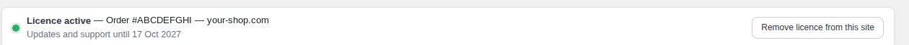
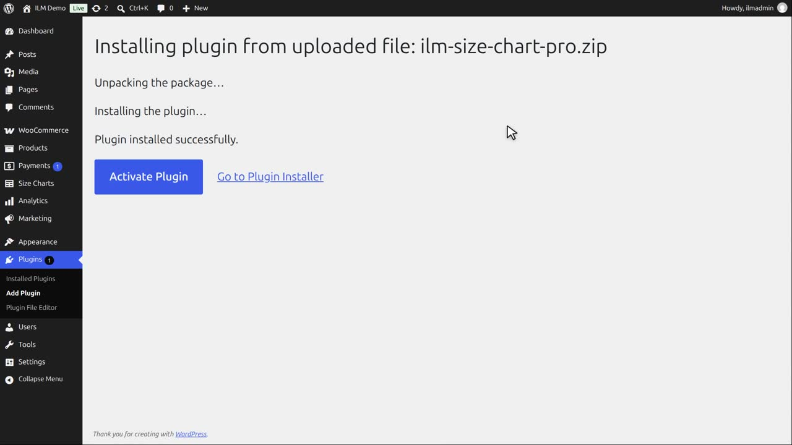
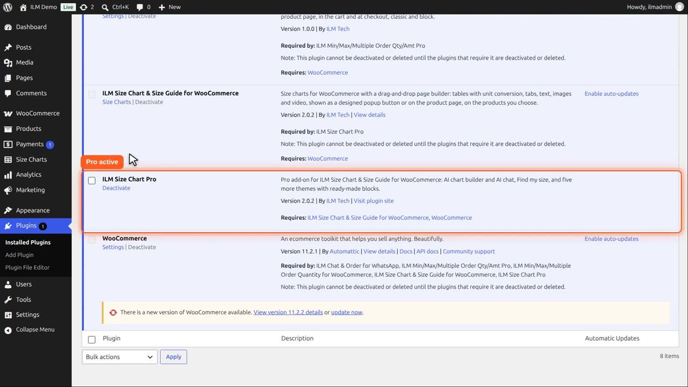
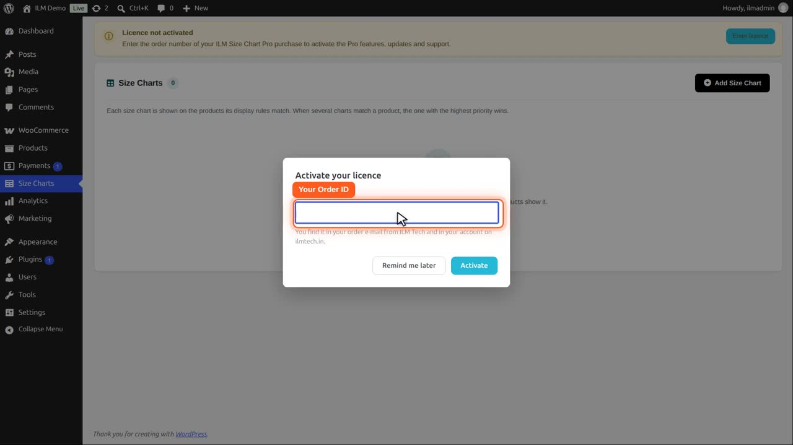
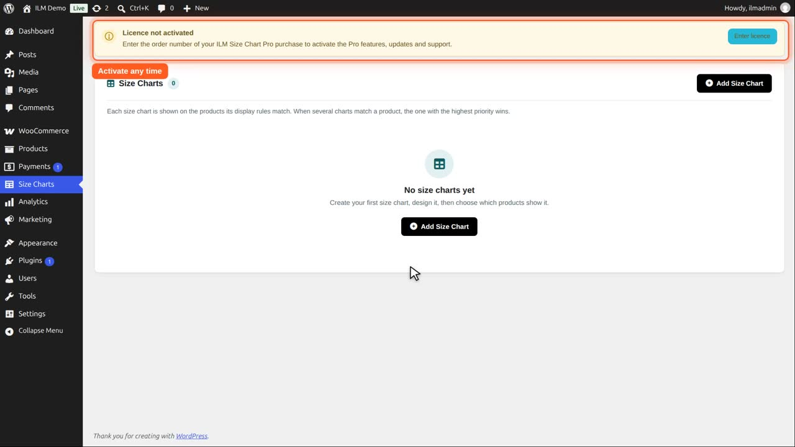
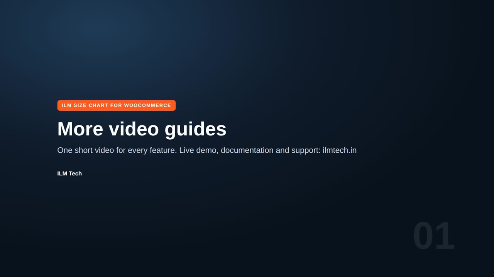

ILM Size Chart Pro is an add-on for the free plugin ILM Size Chart & Size Guide for WooCommerce. The free plugin must be installed and active first. See the ILM Size Chart & Size Guide for WooCommerce guide.
A licence bar appears at the top of the Size Charts pages. Enter the order number of your purchase at ilmtech.in.

The licence bar with an active licence.
When the licence is active, the bar shows the order, the site address, and Updates and support until a date. You can use Remove licence from this site to remove it.
Your charts keep showing with the free plugin's features. These features stop:
Every display rule and the popup designer are part of the free plugin, so your charts keep showing on the same products.
The Pro add-on, from ilmtech.in, is installed the same way: Add New Plugin, Upload Plugin, choose its zip, and Install Now. Pro adds Find my size, the AI builder and five more themes.

Activate it. To upgrade later, upload the new zip the same way and choose Replace current with uploaded: your size charts and settings are kept.

Open the Size Charts menu. Pro asks for your licence: paste the order ID from your ilmtech.in order e-mail and click Activate. It turns on updates, support and the AI.

Remind me later closes the window. The bar keeps the Enter licence button for later.

The size chart list is still empty. Add Size Chart makes your first chart; with an active licence, Create with AI is there too. The next videos show how.
